How to use this book
The book is split into four levels. Each one builds on the last, so work through them in order the first time. Later you can jump straight to the chapter you need.
The screen layout, moving the view, and your first sketch and extrude.
Holes, patterns, revolves, editing history, materials and mass.
Assemblies, 2D drawings, CAD export and stress analysis (FEA).
Macros, the scripting console, the API, add-ins and headless automation.
Each chapter has the same parts:
- Objectives: what you will be able to do by the end.
- Worked example: a card with the part you are building, its key numbers, numbered steps and screenshots. Click any screenshot to enlarge it.
- Tips, warnings and checks: blue boxes are shortcuts, amber boxes are limits you should know about, and green boxes tell you how to confirm your result.
- Exercise: a short task to try on your own. Tick it off, and the contents list marks the chapter done. Your ticks are saved in this browser.
CasiWorks Pro builds solids from triangle meshes. Some commands that need exact edges and faces (fillet, chamfer, shell) are in the ribbon but are not applied. Each chapter says plainly where these limits are, and Appendix B lists them all.
Getting started and the interface
- Start CasiWorks Pro on your computer
- Name the six areas of the screen
- Open one of the built-in example parts
Start the app
CasiWorks Pro runs in a web browser. From the project folder, install the packages once and start the development server:
npm install npm run dev
Open http://localhost:5173/ in Chrome, Edge or Firefox. The app opens with a starter part: a 60 × 40 × 25 mm block named Boss-Extrude1.
The CasiWorks Pro window
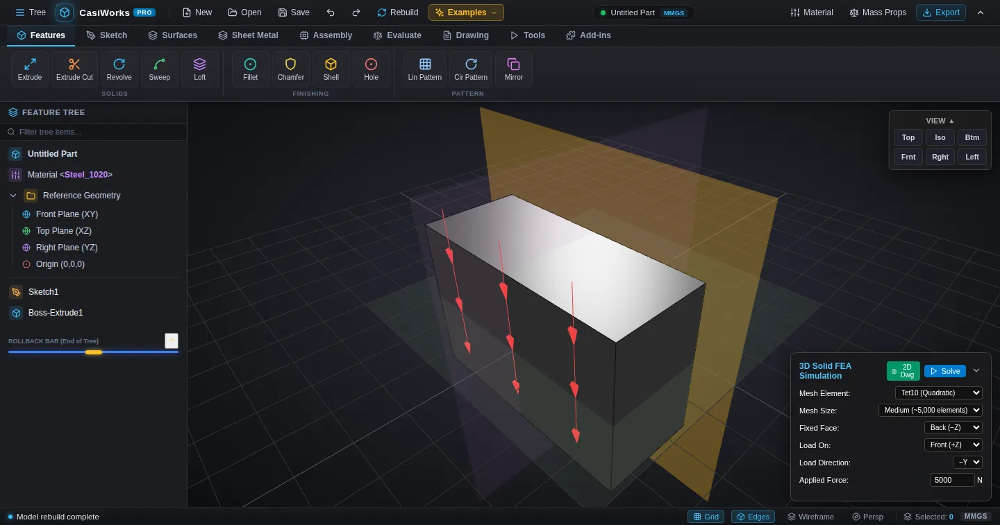
| Area | Where | What it does |
|---|---|---|
| Quick-access bar | Top row | New, Open, Save, Undo, Redo, Rebuild, the Examples menu, Material, Mass Props and Export. |
| Ribbon | Below the top bar | Tabs of commands: Features, Sketch, Assembly, Evaluate, Drawing, Tools and Add-ins. The ⌃ button at the far right folds it away. |
| Feature tree | Left | The history of your part: material, reference planes, and every sketch and feature in the order it was made. The rollback bar sits at the bottom. |
| Viewport | Centre | The 3D model with the Front, Top and Right planes. The VIEW box (top right) jumps to standard views. |
| FEA panel | Bottom right | Stress analysis setup and results (Chapter 13). Use the ⌄ button to shrink it to two small buttons. |
| Status bar | Bottom | Messages and hints on the left. Grid, Edges, Wireframe and Perspective toggles, the selection count and the unit system on the right. |
Open an example part
Load the M12 hex bolt
- Click Examples in the top bar. A list of eight parts opens: L-bracket, hex bolt, pillow block, piston, flange, U-channel, spur gear blank and connecting rod.
- Click Hex Bolt (M12 Fastener). The part replaces whatever was open.
- Look at the feature tree. The bolt was built from two sketches and two extrudes, plus a chamfer.

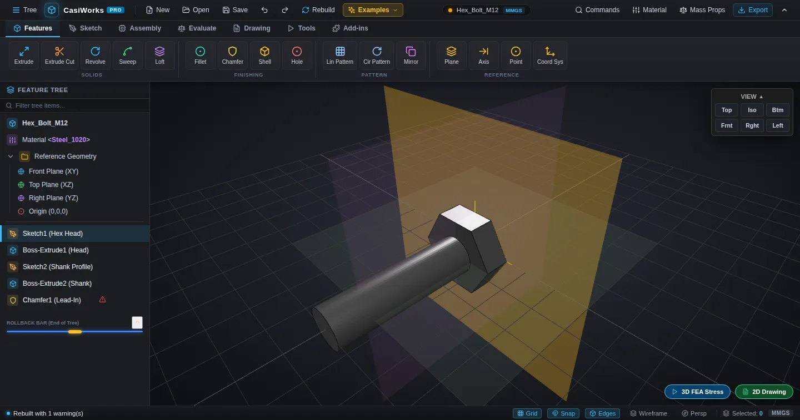
The bolt's Chamfer1 shows a ⚠ in the tree. Chamfers are not applied by the current geometry kernel, so the part is built without it. Hover the triangle to read the message. Nothing else is affected.
Loading an example replaces the open part without asking, and autosave then keeps the example instead of your part. Save first with Ctrl+S if you want to keep your work.
Moving around the 3D view
- Rotate, pan and zoom with the mouse
- Jump to the standard views with the keyboard
- Switch display modes and cut a section through the part
Mouse controls
| Action | Mouse | Touchpad |
|---|---|---|
| Rotate | Left-drag in the viewport | One-finger drag |
| Pan | Right-drag | Two-finger drag |
| Zoom | Scroll wheel | Pinch |
Standard views
| View | Keys | VIEW box |
|---|---|---|
| Front · Back · Left · Right | Ctrl+1 · 2 · 3 · 4 | Frnt · — · Left · Rght |
| Top · Bottom | Ctrl+5 · 6 | Top · Btm |
| Isometric | Ctrl+7 or Space | Iso |
Inspect the pillow block bearing
- Open Examples ▸ Pillow Block Bearing and press Space for the isometric view.
- Click Wireframe in the status bar. You now see every triangle edge, including hidden ones. Click it again to go back to shaded.
- Open the Evaluate tab and click Section (Cross-Section Cut View). The model is cut open so you can see the bore inside. Click it again to close the cut.
- Press Ctrl+1 for the front view and check that the bore is centred.


Persp in the status bar switches between perspective and orthographic projection. Engineers usually check dimensions in orthographic, where parallel edges stay parallel.
Your first part: sketch and extrude
Almost every CAD part starts the same way. You draw a flat 2D profile (a sketch) on a plane, then give it thickness (an extrude).
- Start a sketch on a reference plane
- Draw rectangles and circles with the mouse
- Turn a sketch into a solid with Extrude, and see how inner loops become holes
- Edit a sketch with Trim, Extend, Offset and Mirror
- Sketch on a face of the part or on a reference plane
- Fix a sketch's shape with relations and driving dimensions
A spacer block with a through hole
- Click New (Ctrl+Alt+N) to start an empty part.
- Open the Sketch tab and click Front to sketch on the Front plane. The view turns to face the plane, and the status bar shows Editing Sketch.
- Press R (Corner Rectangle). Click once for the first corner and again for the opposite corner.
- Press C (Center Circle). Click the centre of the rectangle, then click again to set the radius. The status bar tells you what to click next.

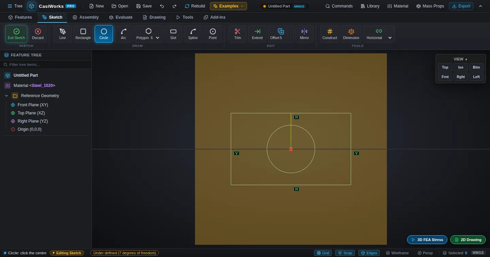
- Click Exit Sketch (the green tick) to keep the sketch. Discard throws it away.
- Press Space for the isometric view. On the Features tab click Extrude, or press E. The property panel opens on the right.
- Check that Selected Sketch Profile is Sketch1, keep Blind, and type
20in Extrude Depth. - Click the green OK. The block appears with a hole through it, because CasiWorks treats a closed loop inside another as a hole.

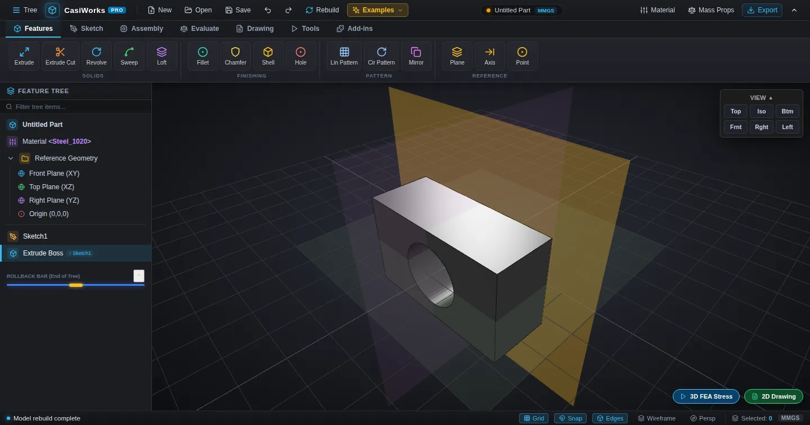
Sketch tools at a glance
| Tool | Key | How to draw it |
|---|---|---|
| Line | L | Click a start point and an end point. |
| Corner Rectangle | R | Click two opposite corners. |
| Center Circle | C | Click the centre, then a point on the circle. |
| Centre Arc | A | Click the centre, the start point and the end point. |
| Polygon | — | Choose 3–64 sides in the drop-down, then click the centre and one vertex. |
| Straight Slot | — | Click the first centre, the second centre, then a point on the side to set the width. |
| Spline | S | Click points the curve passes through. Click the last point again to finish, or the first point to close the curve. |
| Point | — | Click to place a reference point. |
| Construct | — | Toggles construction mode. Construction lines are guides and do not become solid. |
| Dimension | D | Smart dimension: click geometry to add a driving size. |
Editing a sketch
The Edit group changes geometry you have already drawn. Each tool stays on until you press Esc, and the line, arc or circle under the mouse turns yellow before you click.
| Tool | Key | What it does |
|---|---|---|
| Trim | T | Click the part of a line, arc or circle to remove. It is cut back to the nearest crossings on either side of the click. If it crosses nothing, the whole entity is deleted. A circle needs two crossings and becomes an arc. |
| Extend | — | Click a line near the end you want longer. That end grows until it meets the next line, arc or circle. |
| Offset | — | Type the distance next to the button. Click an entity, then click the side. A connected chain (a rectangle or a slot) offsets as a whole, with the corners joined again. |
| Mirror | — | Click the mirror line first, often a construction line. Then each entity you click gets a mirrored copy. |
A keyhole plate with Trim
- Start a new part and sketch on the Front plane. Turn Snap off in the status bar if you want points exactly where you click.
- Draw a Center Circle. Then draw a Corner Rectangle whose top edge starts at the circle's centre, narrower than the circle and reaching well below it.
- Press T for Trim. Click the rectangle's top edge: it crosses nothing, so it is deleted.
- Click each side of the rectangle inside the circle. Each side is cut back to where it crosses the circle.
- Click the bottom of the circle, between the two sides. The circle becomes an arc, and the outline is a single closed keyhole.
- Exit the sketch and extrude it 8 mm.
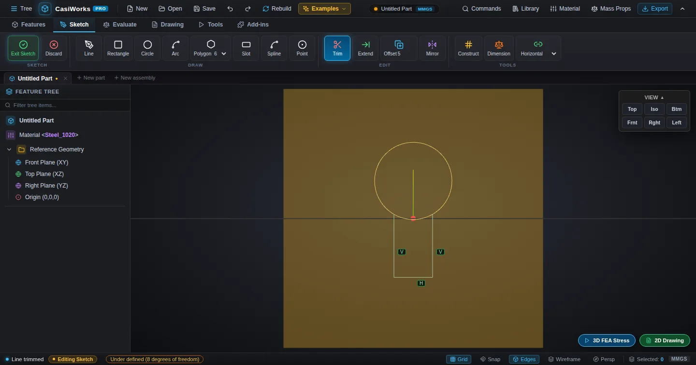
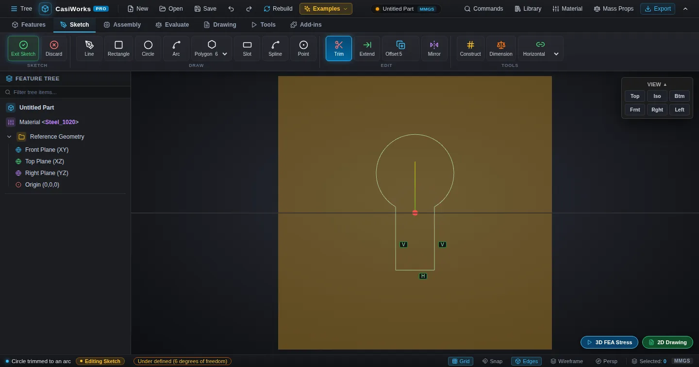
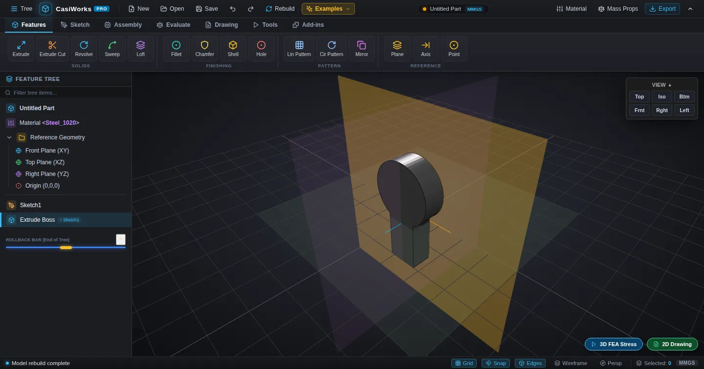
Relations and dimensions
A sketch you draw is approximate. Relations and dimensions make it exact, and they let you change a size later by typing a number.
An 80 × 50 plate with a Ø20 hole, by dimensions
- Draw a rough rectangle and a circle in it. The rectangle's sides already have H (horizontal) and V (vertical) relations, shown as small green tags. A slot's sides are kept parallel and a polygon's sides equal in the same way.
- Press D (Dimension). Click the bottom side, then click in empty space. Type
80and press Enter. The rectangle becomes 80 wide and stays a rectangle. - Dimension a vertical side
50and the circle20. A circle is dimensioned by its diameter (Ø), an arc by its radius (R). To dimension a distance, click two items instead of empty space: two end points, a point and a line, or two lines. - Double-click a dimension to change it. The sketch updates straight away. Point at a tag or dimension and click its ✕ to delete it.
- A dimension can also be an equation. Type
=plateor=wall*2instead of a number, using the variables from chapter 7. The dimension shows ƒ and follows the variables and the active configuration, even while the sketch is open. Type a plain number to unlink it. - For other relations, choose one in the Relation list (Horizontal, Vertical, Parallel, Perpendicular, Equal, Coincident, Concentric, Tangent, Fix) and click the item or items. For example, use Equal on two sides to make a square.
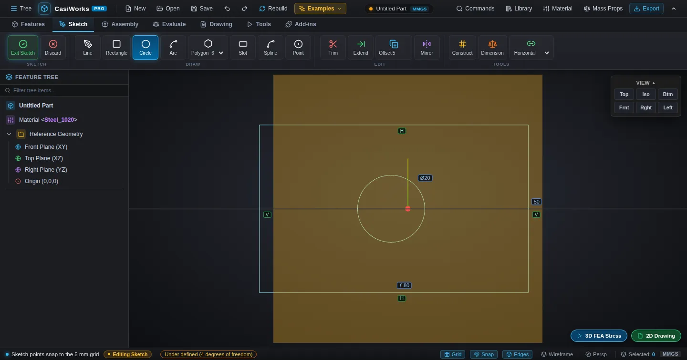
Amber in the status bar, with the degrees of freedom left: some sizes or positions are still free. Free geometry stays where you drew it.
Green, and the lines turn white: every size and position is fixed. Add a Fix relation or dimensions to the origin to get there.
A relation or dimension that conflicts with the others, or that they already imply, is not added. The status bar says why, and nothing changes.
Sketching on faces and reference planes
A sketch does not have to sit on Front, Top or Right. On Face on the Sketch tab starts a sketch on any flat face of the part. A reference plane (Features ▸ Plane) is a standard plane moved along its normal and tilted. You can sketch on it from the On Plane… picker.
A boss on a face, and a tilted plane
- Make a 60 × 40 block, 15 mm deep. Press Ctrl+1 to look at its front face.
- On the Sketch tab click On Face, then click the front face. A sketch starts on that face, and the view turns to look straight at it.
- Draw a circle in the middle, confirm the sketch and Extrude it 10 mm. The boss grows out of the face.
- On the Features tab click Plane. Choose From plane Top, Offset
40and Tilt20°, then OK. Plane1 appears in the tree and as a yellow square in the model. - On the Sketch tab pick Plane1 in On Plane… to sketch on it. Sketches on a plane follow it: change its offset or tilt later and they move with it. You can drive the offset with an equation (chapter 7).
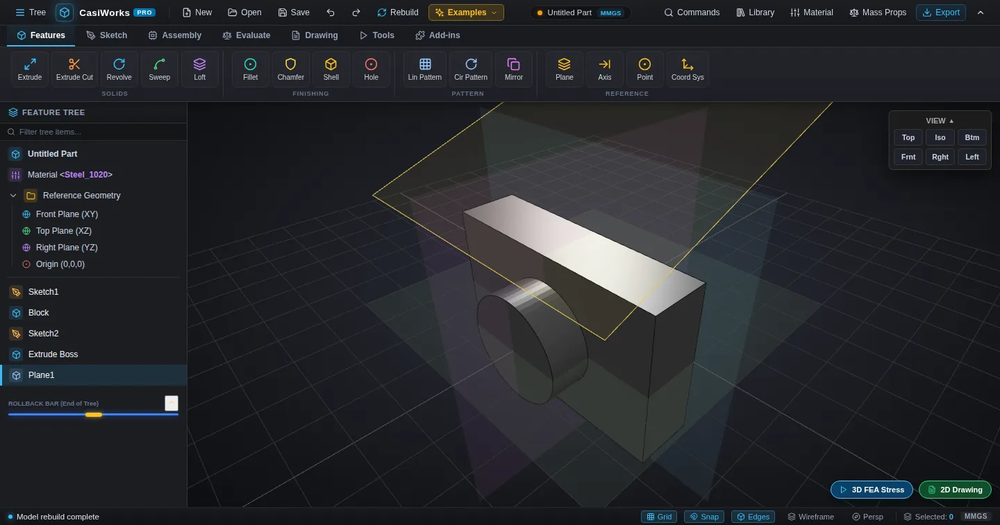
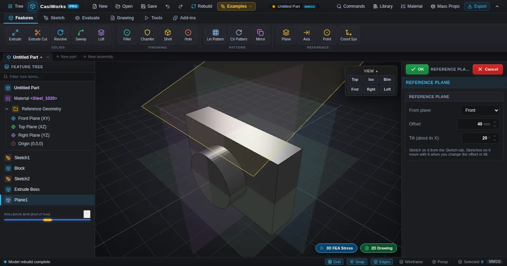
A sketch on a face remembers the plane the face was on. If you change the part later so that the face moves, the sketch stays where it was. Use a reference plane when the sketch should follow a size.
To make a frame or a tube, draw the outer outline and Offset it inwards by the wall thickness. The inner loop becomes a hole when you extrude.
Your tree should read Sketch1, Extrude Boss. If the extrude shows ⚠, the profile is probably not closed. Double-click the sketch in the tree, make sure the corners meet, and exit the sketch again.
Esc cancels the current tool without leaving the sketch. Ctrl+Z undoes the last entity.
Holes and cuts
- Drill a hole with the Hole Wizard
- Pick a hole type, a diameter, a depth and a drill direction
- Use ISO metric standard holes: clearance, counterbore, countersink and tapped
- Remove material with Extrude Cut
Mounting plate with a Ø12 drilled hole
- Build an 80 × 50 mm rectangle on the Front plane and extrude it 20 mm, as in Chapter 3.
- On the Features tab click Hole. The Hole property panel opens.
- Set Diameter to
12and Hole Depth to20. Leave Hole Type on Simple (drilled). Counterbore and Countersink are the other choices. - Under Hole Position, enter where the hole starts and the drill direction (for example
+Zinto the front face). - Click OK. A Hole feature is added to the tree.
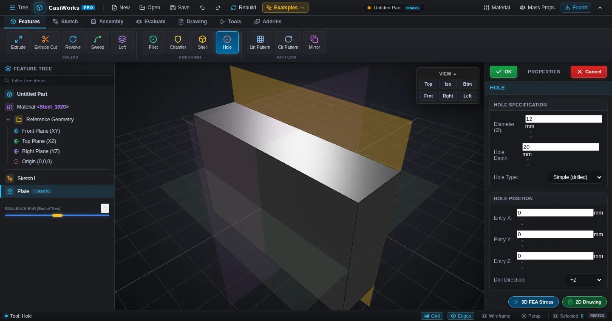
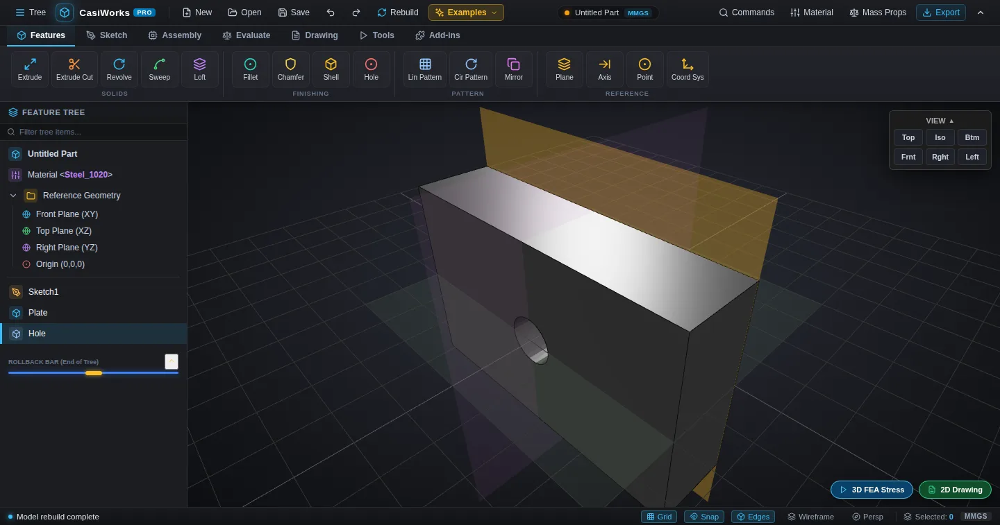
Extrude Cut
Extrude Cut works like Extrude but removes material. Sketch the shape of the pocket or opening, then pick the cut depth. Through All cuts right through the part however thick it is, which is the safe choice for holes that must always go through.
Standard holes
Set Standard to an ISO metric size (M3 to M20), and the Hole Wizard fills in every size for that screw. A counterbore fits a socket head cap screw (ISO 4762). A countersink fits a flat head screw (ISO 10642). A tapped hole is drilled at the tap drill size. A line under the choices says exactly what you get.
A counterbore for an M8 cap screw
- On the plate from Example 4.1, click Hole again. Set Hole Type to Counterbore and Standard to ISO metric M8.
- Leave Fit on Normal clearance. Close is for accurate location, and Loose leaves room to adjust. The line below reads Ø9 clearance (normal), counterbore Ø15 × 8.6 deep for ISO 4762 heads.
- Set the depth and the entry point (for example X = 25), and click OK. The tree shows M8 Counterbore. The screw head sits just below the surface.
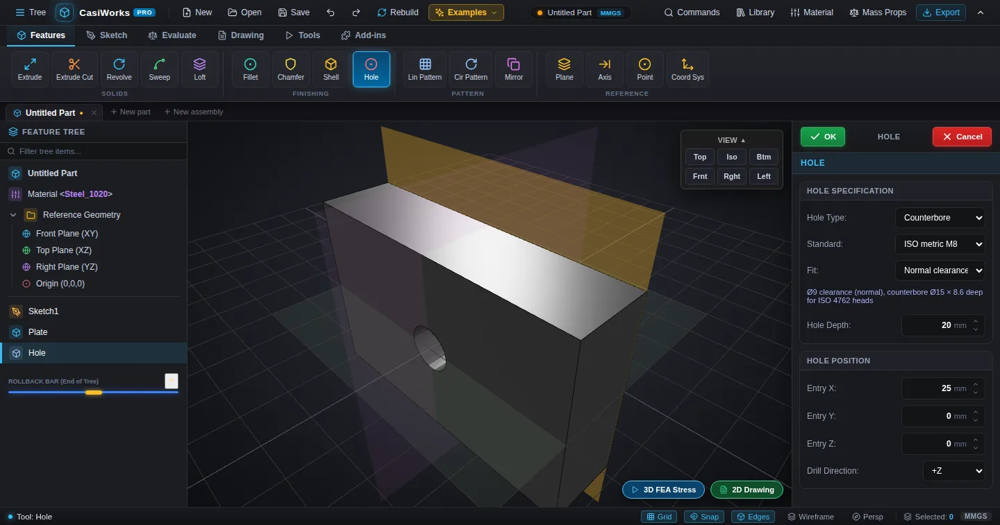
| Hole type | M8 example | Use |
|---|---|---|
| Simple (clearance) | Ø8.4 close · Ø9 normal · Ø10 loose | A bolt passes through |
| Counterbore | Ø9 + Ø15 × 8.6 deep | Socket head cap screw below the surface |
| Countersink | Ø9 + Ø17.92 × 90° | Flat head screw flush with the surface |
| Tapped | Tap drill Ø6.75, thread M8×1.25 | The screw threads into the part. The thread itself is not modelled. |
Open Mass Props before and after the hole. The volume should drop by about π × 6² × 20 ≈ 2,262 mm³. It drops a little less, because a hole is drawn as a 32-sided polygon.
Patterns and mirror
- Repeat a feature in a row with Linear Pattern
- Repeat it around an axis with Circular Pattern
- Copy features across a plane with Mirror
Peg rail: four pegs, 30 mm apart
- Make the rail: a 120 × 40 mm rectangle extruded 8 mm.
- Sketch a Ø12 circle near the left end (centre at x = −45) and extrude it 20 mm. This is the peg.
- Click Lin Pattern. Set Direction to
+X, Instances to4and Spacing to30mm. - Click OK. Four pegs now stand on the rail. Change the original peg, and every copy changes with it.

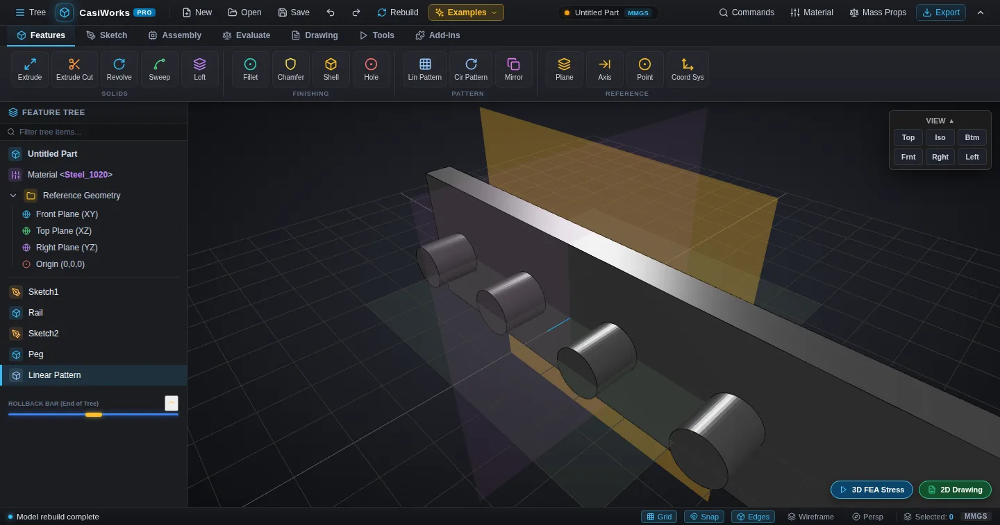
| Command | Settings | Typical use |
|---|---|---|
| Lin Pattern | Direction, Instances, Spacing | Rows of holes, ribs, teeth on a rack |
| Cir Pattern | Instances, Total Angle | Bolt circles on flanges, spokes, gear features |
| Mirror | Mirror Plane (Front, Top or Right) | Symmetric parts: model half, then mirror |
Revolve, sweep and loft
- Spin a profile around an axis to make round parts
- Choose the axis: a centreline, the sketch axes or a reference axis
- Know when to use sweep and loft instead
Study the engine piston
- Open Examples ▸ Engine Piston Head.
- Double-click Sketch1 (Piston Profile). The profile is a half cross-section with the ring grooves drawn in. A revolve sweeps it 360° to make the whole body.
- Exit the sketch and double-click Revolve-Boss1 to see its Angle. Try 270° to cut the piston open, then put it back to 360°.
- Cut-Extrude1 (Pin Bore) then cuts the wrist-pin hole across the body.
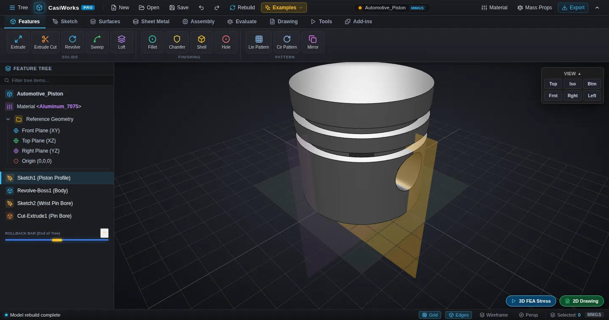
A ring about a centreline
- Sketch on Front: a 10 × 12 rectangle from x = 15 to 25, and a vertical line through x = 0. Make the line construction geometry (Construct), so it is a centreline and not part of the profile.
- Click Revolve. In Axis, choose Centreline (0, -10) → (0, 25). The list also offers the sketch's own vertical and horizontal axes, every line of the sketch, and your reference axes.
- Set the Angle to 270° to see the section, and click OK: a ring 30 mm inside, 50 mm outside.
- To revolve about an axis that is not in the sketch, add one with Features ▸ Axis: parallel to model X, Y or Z, through a point or a reference point (Point). It must lie in the sketch plane. Move the point later and the revolve follows.
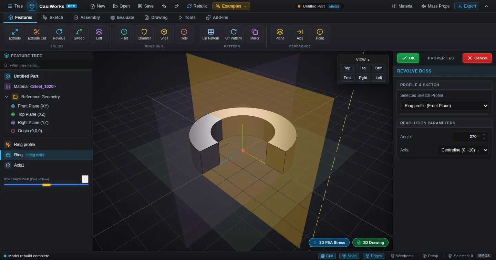
A profile that crosses its axis would make a solid that overlaps itself, so the revolve reports The profile crosses the axis of revolution. Draw only half the cross-section.
Round parts: shafts, pulleys, pistons, bottles. Draw half the cross-section.
A profile moved along a path: pipes, handles, springs.
A smooth blend between two or more profiles: ducts, transitions, hulls.
Editing history: the feature tree
This is what makes CasiWorks parametric. Every feature remembers its settings, so you can change one and the rest of the part rebuilds to match.
- Edit a feature's settings after it is built
- Roll back history to insert or inspect features
- Suppress features and read rebuild warnings
- Drive sizes from named variables with equations
- Keep several versions of a part as configurations
Make the L-bracket's upright taller
- Open Examples ▸ Mounting L-Bracket.
- Double-click Boss-Extrude2 (Upright) in the tree. Its property panel opens with the current depth of 55 mm.
- Change the depth and click OK. The holes and later features rebuild on the new shape.
- Drag the yellow rollback bar handle up, to just below Boss-Extrude2. The later features turn grey and stop counting. This is how you add a feature in the middle of the history.
- Drag the bar back to the end, or step it down with the arrow buttons beside it, to turn everything back on.

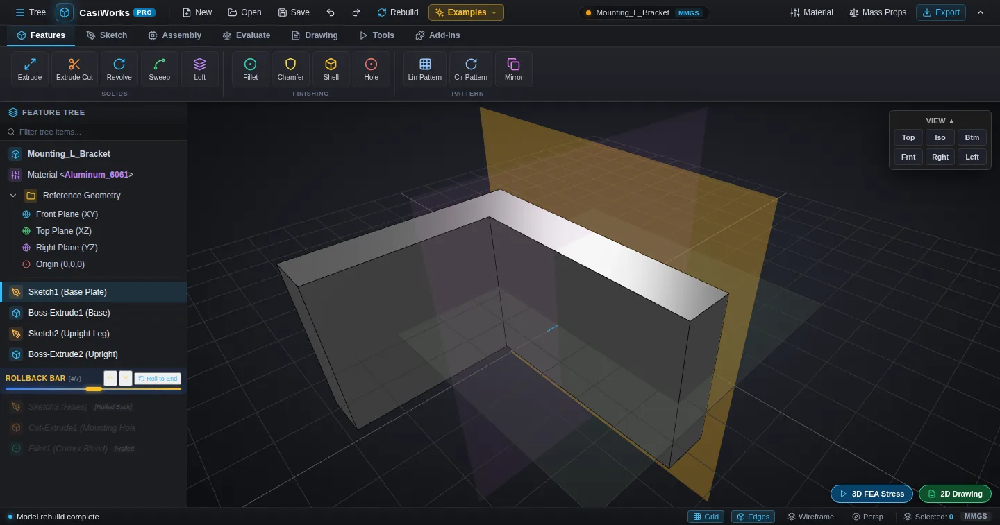
Turns a feature off without deleting it. Its children are suppressed too, and unsuppressing a child brings its parents back.
Rebuilds the whole tree. Normally this happens on its own after every change.
A feature that cannot be built shows ⚠ and is skipped. The rest of the part still builds.
Type in Filter tree items… to find a feature by name in a long history.
Equations: name a size once, use it everywhere
A global variable is a name with a value, such as wall = 4. A feature size can be an expression that uses it, such as wall * 3. Change the variable and every size that uses it updates.
A plate whose thickness follows the wall
- On the Tools tab, click Equations. Click Add variable twice. Name the first
wallwith expression4, and the secondplatewith expressionwall * 3. The Value column shows 4 and 12. Click Apply. - Sketch a 60 × 40 rectangle and start an Extrude. In Extrude Depth, type
plate(or=plate) and press Enter. The field shows 12 with a purple ƒ: it is linked. Click OK. - Open Equations again and change
wallto5. Below the table, Linked feature sizes lists the extrude's depth. Click Apply: the plate rebuilds 15 mm thick.
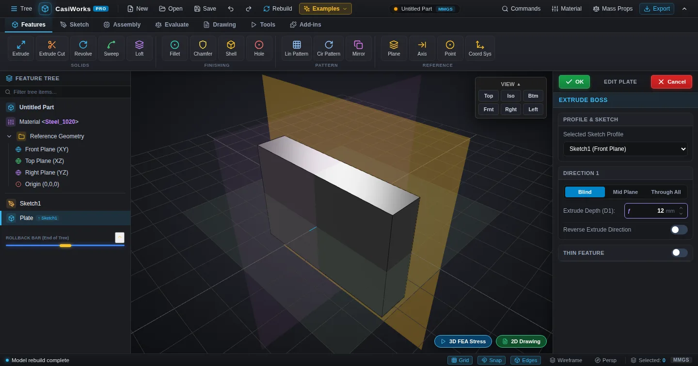
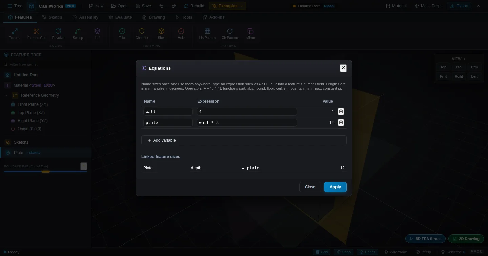
Light and Heavy versions of the plate
- With the plate from Example 7.2, click Configs on the Tools tab. The table has a row per version of the part and a column per variable. Default is the plain variable values.
- Click Add configuration twice. Name the rows Light and Heavy, put
2and8in their wall column, and click Apply. Leave a cell empty to keep the default. The grey hint shows what the value is in that row. - Click the circle in the Heavy row, or choose it in the picker beside Configs on the ribbon. The plate rebuilds 24 mm thick, and the title bar shows Heavy next to the part name.
- Switch back to Default the same way. Switching is an undo step, and the active configuration is saved with the project.
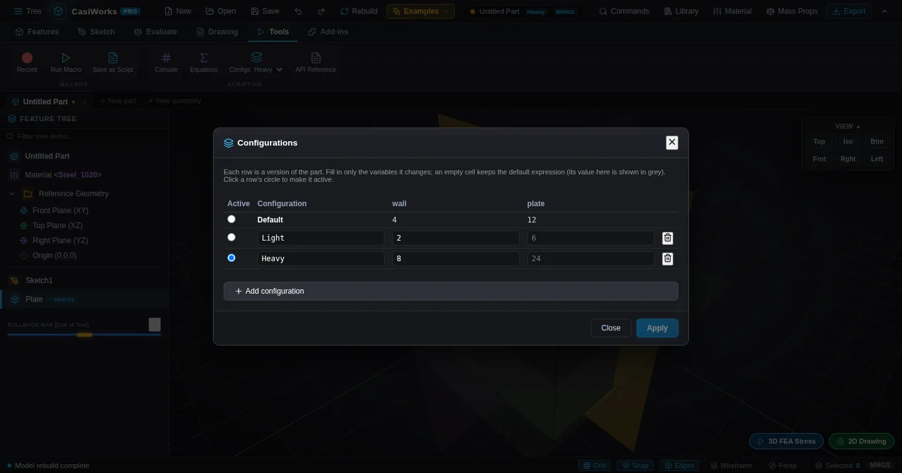
| You can use | Examples |
|---|---|
| Numbers and variables | 12.5, wall, 1.5e2 |
| Operators, in the usual order | + - * / ^ and brackets: (width - 2 * wall) / 2 |
| Functions (angles in degrees) | sqrt abs round floor ceil sin cos tan min max, and the constant pi |
A field linked to an expression shows ƒ, and clicking into it shows the expression. Type a plain number, or use the arrows, to unlink it. Arithmetic without variables, such as 25 * 2, is just worked out once. Every size field can be linked, including a hole's X, Y and Z position, and so can sketch dimensions (chapter 3). Counts are rounded to whole numbers. Variables are saved with the project, and undo covers them.
// The same from the scripting console (chapter 15) casiworks.commands.execute('equations.set', { variables: [{ name: 'wall', expression: '5' }, { name: 'plate', expression: 'wall * 3' }] }); casiworks.commands.execute('equations.list'); // values and linked sizes
Rename features after what they do ("Mounting Holes", not "Cut-Extrude1"). Six months later you will be glad you did, and so will your colleagues.
Materials and mass properties
- Give a part a material from the library
- Read its mass, volume, surface area, centre of mass and inertia
- Measure distances, angles and wall thicknesses on the model
Weigh the L-bracket in aluminium
- With the L-bracket open, click Material in the top bar (or the Material line in the tree).
- Pick a material on the left. The right side shows its density, elastic modulus, Poisson's ratio and yield strength. Click Apply Material.
- Click Mass Props. You get mass, volume, surface area, the centre of mass, and the moments of inertia about the centre of mass.
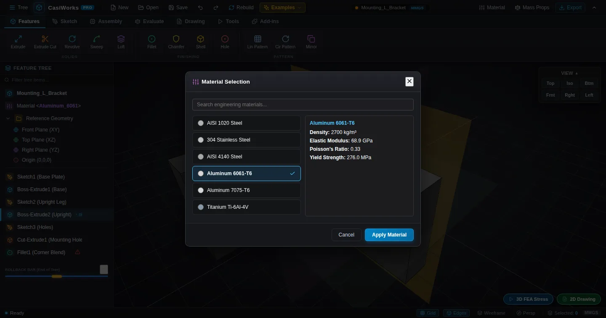

| Material | Typical use |
|---|---|
| AISI 1020 Steel | General machined parts (the default for new parts) |
| 304 Stainless Steel | Corrosion-resistant parts, food and medical |
| AISI 4140 Steel | High-strength shafts and gears |
| Aluminium 6061-T6 · 7075-T6 | Light brackets and housings · aerospace and high-stress parts |
| Titanium Ti-6Al-4V | Very high strength-to-weight ratio |
Swap the bracket to Titanium Ti-6Al-4V. The volume stays at 52.36 cm³ but the mass goes up, because titanium is denser than aluminium.
Measuring the model
Check a plate's thickness in two clicks
- Click Measure on the Evaluate tab, or press M. A Measure card opens at the top left of the viewport.
- Click a point on the model. A click near a corner snaps to it (a small cube); otherwise the point sits on the face you clicked (a dot).
- Click a second point. The card shows the straight Distance, its dX · dY · dZ parts and the Angle between faces. A dashed line with the length joins the two points.
- Click the top and the bottom face of a plate, anywhere. The faces are parallel, so the card adds Parallel faces, gap: the thickness, however far apart the two points are. Use Ctrl+1 and Ctrl+2 (front and back view) to reach both sides.
- A third click starts a new measurement. Esc finishes.
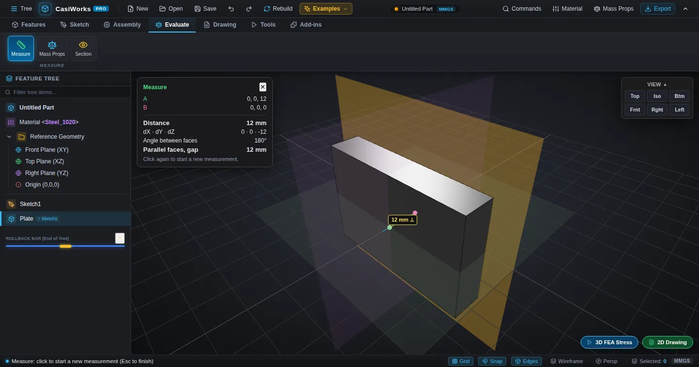
casiworks.model.measure(a, b, { normalA, normalB }) gives the same numbers for points you already know.
Mass properties in your own coordinate system
Inertia about the bracket's own axes
A drawing or a customer often wants the centre of mass and inertia relative to a mounting point, not to the model origin. A coordinate system gives you that reference.
- Features ▸ Coord Sys. Type the origin (or pick a reference point under Origin at, and the system moves with it). Turn the axes with Turn about X / Y / Z; the turns apply about model X, then Y, then Z.
- Click OK. CS1 appears in the tree and as red (X), green (Y) and blue (Z) arrows on the model.
- Open Mass Props and set Report relative to to CS1. The centre of mass is now in CS1's coordinates, and the inertia runs along CS1's axes, both at the centre of mass and about CS1's origin.
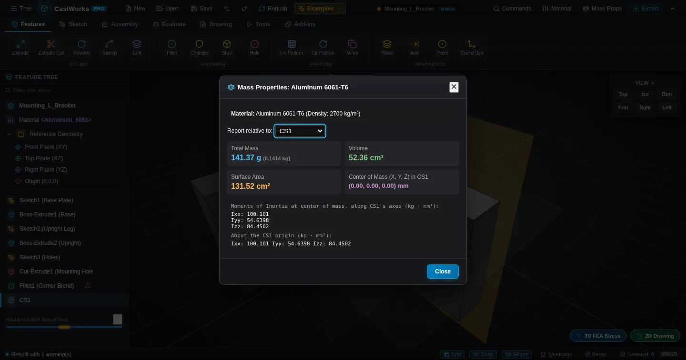
api.features.coordinateSystem({ origin, rotation: { z: 90 } }) adds one, and api.model.massProperties({ coordinateSystem: id }) reports in it. Its origin and turns can be driven by equations, e.g. rotation.z.
Fillet, chamfer and shell
The Finishing group on the Features tab has Fillet (round edges), Chamfer (bevel edges) and Shell (hollow out a solid with a set wall thickness). You can add them and set their values, and they are saved in the history.
Add a 4 mm fillet and read the warning
- Click Fillet, set Radius to
4and click OK. - The tree gets a Fillet entry with ⚠. Hover it to read the message: Fillet not applied: the mesh kernel cannot round edges; round the corner in the sketch with an arc instead.
- The part is built without the fillet. Your setting is kept, so it will take effect once the kernel supports it.
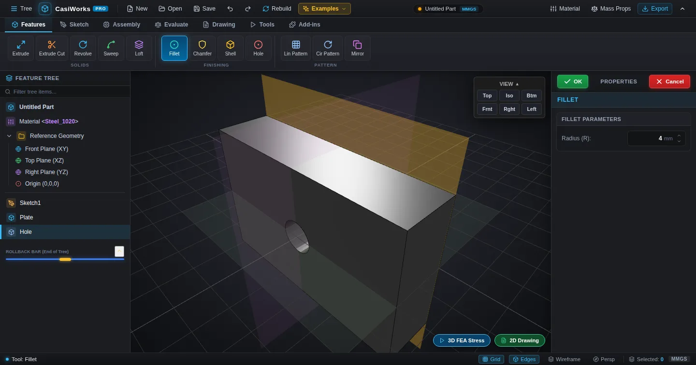

Fillet, chamfer and shell need real edges and faces, and the triangle-mesh kernel does not have them. Round corners in the sketch with a Centre Arc and Trim. To hollow a part, Offset its outline inwards by the wall thickness and use Extrude Cut (chapter 3).
Assemblies and mates
- Insert components into an assembly document
- Assemble your own parts, which the assembly follows when they change
- Mate real faces by clicking them, and read what the mates leave free
- Move parts along their mates (motion) and build an exploded view in steps
- List the parts in a bill of materials and find overlaps with interference detection
Parts and assemblies are separate documents, each in its own tab under the ribbon. New part and New assembly (Ctrl+Alt+A) sit at the end of the tabs. A part document has the Features and Sketch tabs; an assembly has the Assembly tab. Click a tab to switch: each document keeps its unsaved changes and its undo history while you work on another, and all of them come back after a reload.
Pin a shaft into a base plate
- Click New assembly at the end of the document tabs. The ribbon opens on the Assembly tab.
- Under Components, click the built-in Plate and then Pin. Both are inserted at their default positions, so the pin stands beside the plate.
- Under Mates, click Concentric. The pin's axis is lined up with the plate's centre, and the pin moves onto the plate.
- Click Solve (Actions) to solve all the mates together. The status bar shows the leftover error, for example residual 0.00000.
- Click Explode. Set Explode Distance to 40 mm, leave Leader Lines on, and click OK. The pin slides up its shared axis, away from the plate, and a dashed yellow line joins it to where it really sits.
- To put it back, click Explode again (it stays highlighted while the view is exploded) and click Collapse.
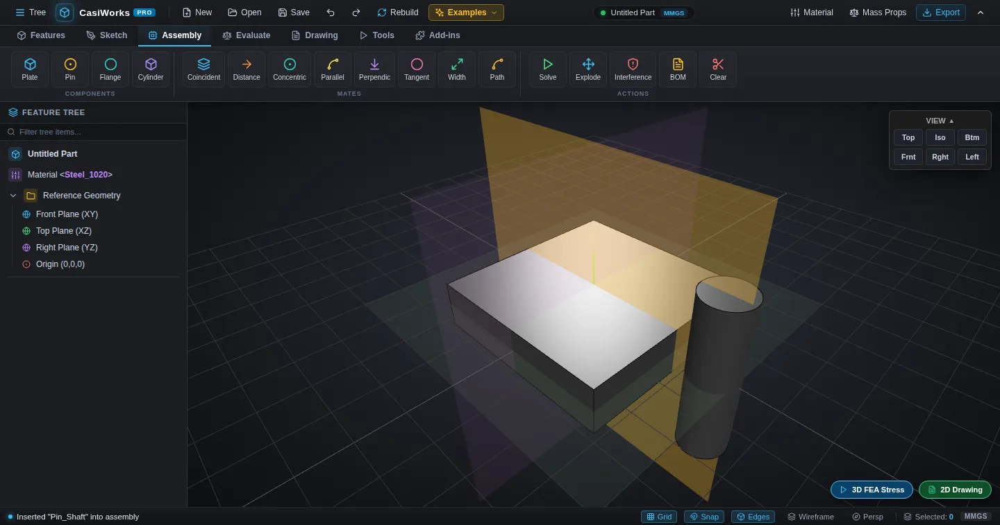

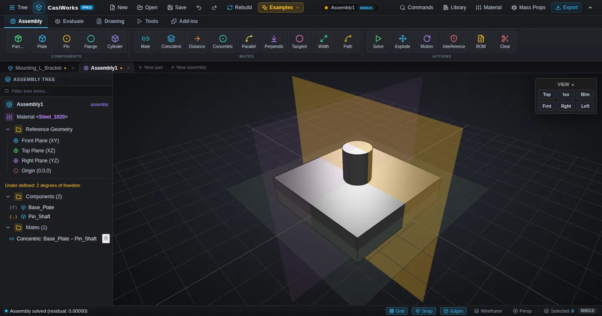


Assemble your own parts
- Make two parts, each with New part: a 60 × 40 mm plate, 10 mm thick, with a Ø10 hole 10 mm right of centre (call it Plate), and a Ø10 × 30 pin (Pin). Give them materials.
- Click New assembly. On the Assembly tab click Part…: the dialog lists the parts that are open, and the parts in the library when it is running. Insert Plate, then Pin. Each component refers to its part; nothing is copied.
- Click Mate (Ctrl+Alt+M). Click the side of the pin, then the wall of the hole. Both are recognised as Ø10 cylinders, and the panel offers Concentric. Click Add mate: the pin lines up with the hole.
- The Mate tool stays on. Click the end face of the pin, then the front face of the plate, and add the Coincident mate. The two faces now touch, with the parts on either side of them: the pin stands on the hole like a peg on its seat. Press Esc.
- Look at the tree: (f) Plate is fixed and (-) Pin is under defined. Hover it: it is still free to turn about Z, which is right for a round pin in a round hole. The line above the components sums it up.
- Click the Plate tab and make the plate 16 mm thick. Click the Fixture tab: the plate is thicker, and the pin has moved up with the face it is mated to.
- Add an Angle mate between two flat faces (or from a script, as below) and click Motion. Pick the mate, set From and To, and click Play: the mate's value changes frame by frame and everything mated to the moving part follows.
- Click Explode. Select the pin, choose +Z and 45 mm, and click Add step. Steps play in order with Play the steps, or drag Show. From auto turns the automatic explode into steps you can edit.
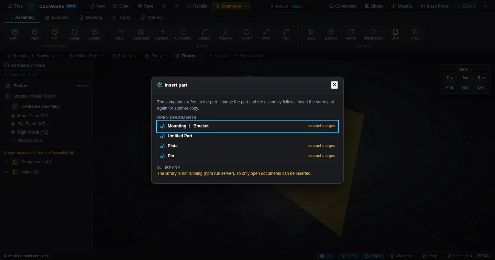
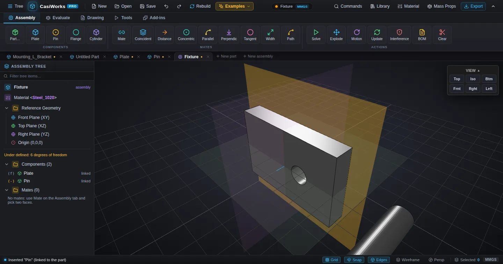
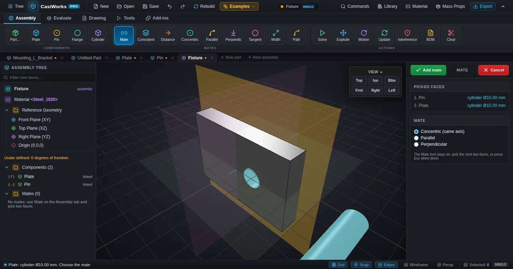
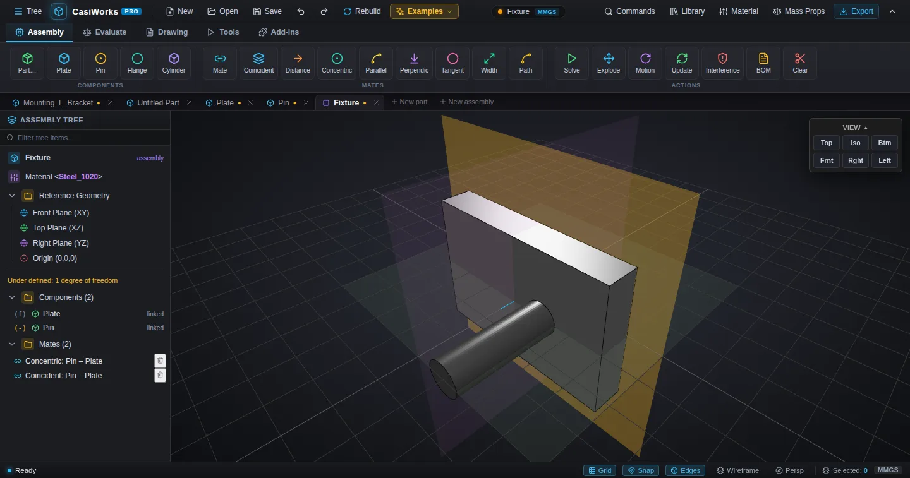
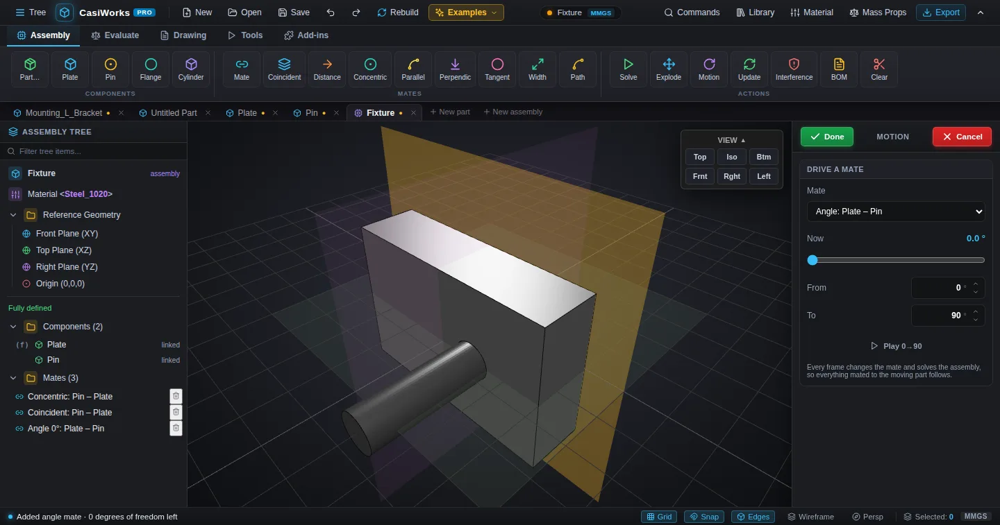
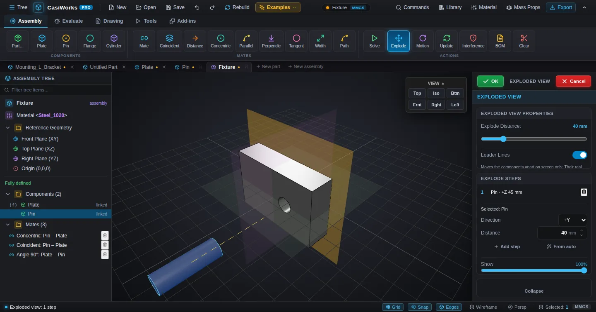
| In the tree | Means |
|---|---|
| (f) | Fixed in place (the first component, unless you change it). |
| (-) | Under defined: the mates leave it free to move. The tooltip says how: slide along X, turn about Z… |
| (nothing) | Fully defined: the mates hold it completely. |
| (+) | Over defined: its mates conflict and cannot all hold. The conflicting mates are shown in red. |
| linked · library · cached copy | Where the part's shape came from: an open document, the library, or (when neither can be reached) the copy saved inside the assembly. Open the part or start the library and click Update. |
Each mate is turned into equations that are zero when it holds. Moving each part a tiny step along its six possible motions (three slides, three turns) and watching those equations change shows which motions the mates stop and which they leave. A mate that cannot be satisfied with the others is reported as a conflict.
const asm = api.workspace.newAssembly('Fixture');
const plate = api.assembly.insert({ part: plateDocumentId });
const pin = api.assembly.insert({ part: pinDocumentId });
api.assembly.mate({ type: 'concentric',
component1: plate, ref1: api.assembly.faceAt(plate, { x: 15, y: 0, z: 5 }),
component2: pin, ref2: api.assembly.faceAt(pin, pinSidePoint) });
api.assembly.dof(); // { status: 'under-defined', components: [...] }
api.assembly.mate({ type: 'angle', component1: plate, ref1: 'right', component2: pin, ref2: 'right', angle: 0, axis: { x: 0, y: 0, z: 1 } });
api.assembly.drive(api.assembly.mates().at(-1).id, 90); // turn the pin 90°| Mate | What it holds |
|---|---|
| Coincident | Two faces touch, for example top to bottom. |
| Distance | Two faces stay a set gap apart (15 mm from the ribbon button). |
| Concentric | Two cylinders share an axis. |
| Parallel · Perpendicular | Face normals are parallel, or at 90°. |
| Tangent | A cylinder rests against a flat face. |
| Width | A component is centred between two boundary faces. |
| Path | A component is held on a guide curve. |
The exploded view only changes what you see. Components keep their real positions and mates, so saving, solving and exporting all use the assembled positions. Each mated part moves away from its partner; parts later in the list move further.
Add the fewest mates that fix the position. Extra mates that fight each other leave a residual above zero after Solve, and that number tells you something is over-constrained. Clear removes all components and mates.
Interference detection
Click Interference in the Actions group to check whether any two components overlap at their assembled positions. Overlapping volumes are shown in red, seen through the parts, and a card lists each pair with its shared volume. Parts that only touch are not counted.
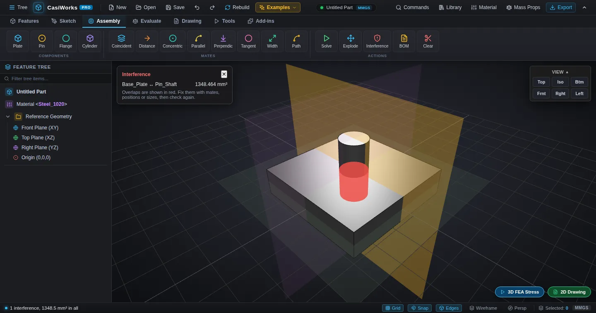
When you move, mate or add a component, the card says the assembly changed. Click Check again. The check uses the real positions, so turn the exploded view off before you look at the red volumes. casiworks.assembly.interference() gives the same list in a script.
Bill of materials
Click BOM in the Actions group to list the parts in the assembly. Identical parts (same name, size and material) share one row with their quantity. Each row gives a description of the shape and its size, the material, and the mass of one part and of all of them. Use the Material picker in a row to give those parts their own material. The parts change colour in the viewport, and the masses update. Export CSV saves the table for a spreadsheet or a purchasing system.
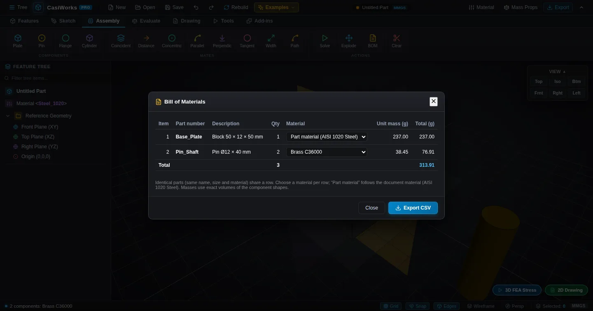
Masses use exact volumes of the component shapes. A component without its own material uses the part material chosen with Material in the top bar. Its row says Part material. Each component's material is saved with the project. From the console, casiworks.commands.execute('assembly.bom') returns the same table as data, and assembly.setMaterial sets materials: { components: [ids], material: 'Brass_C36000' }.
2D engineering drawings
- Make a standard three-view drawing sheet from a part
- Turn hidden lines, dimensions and GD&T on and off
- Export the sheet as PDF, SVG or DXF
- Make an assembly drawing with a parts list and item balloons
A drawing sheet for the L-bracket
- Open the L-bracket and click the Drawing tab on the ribbon.
- Choose the sheet size in the SHEET group: A4 landscape or portrait, A3 landscape or ANSI B.
- In the SHOW group, switch Hidden Lines, Dimensions and GD&T on or off. A highlighted button is on.
- Click Open Sheet. The sheet shows the front, top and right views, an isometric view and a title block with the part name, material and date. The green 2D Dwg button on the FEA panel opens the same sheet.
- Click PDF for a sheet to print or send, SVG to put it in a document or web page, or DXF to open it in AutoCAD or another 2D CAD program. You can export straight from the ribbon without opening the sheet, or use the Export buttons on the sheet. The PDF is vector: lines stay sharp at any zoom, and it prints at true scale on the chosen paper size.
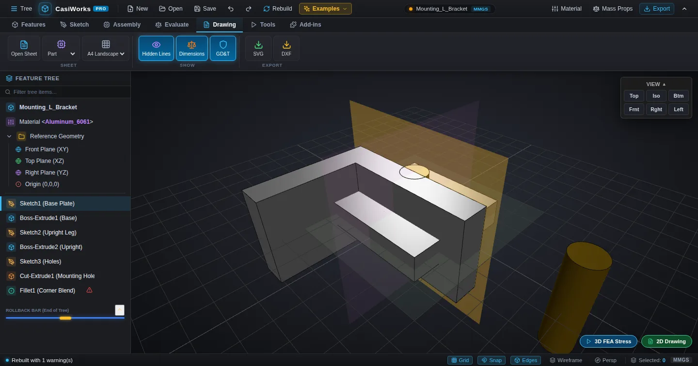
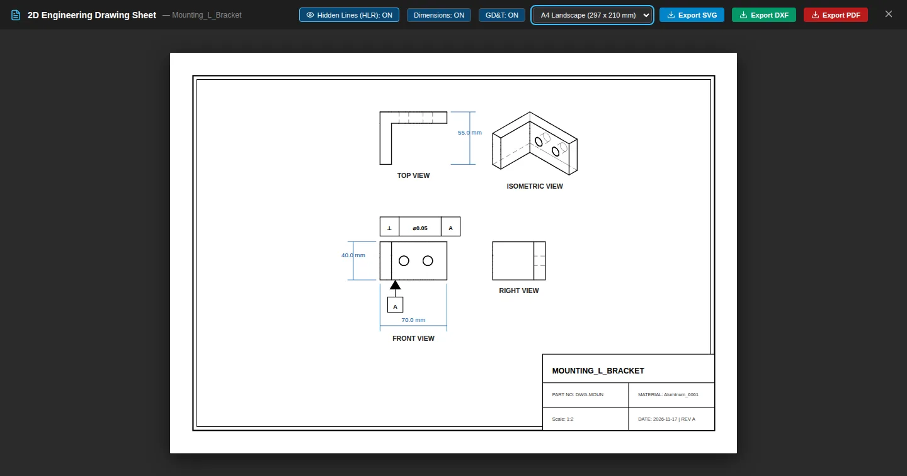
The ribbon and the sheet window use the same settings, so a switch changed in one shows in the other. The settings stay when you start a new part. DXF holds the views and dimensions; the GD&T symbols are in the SVG only.
The views, dimensions and GD&T symbols are placed for you, from the first body. You cannot add a section view or your own dimensions yet.
// The same from the scripting console (chapter 15) casiworks.commands.execute('drawing.options', { sheetSize: 'A3_LANDSCAPE', dimensions: true, gdt: false }); casiworks.commands.execute('drawing.export', { format: 'dxf' });
An assembly drawing with a parts list
- Build the assembly from Example 10.1, with a second pin. Make the pins brass in the BOM window (chapter 10).
- On the Drawing tab, change the first picker in the SHEET group from Part to Assembly.
- Click Open Sheet. The four views show the assembled components. A parts list sits on the title block, with the same rows as the BOM: item, part number, description, material and quantity. Each item has a numbered balloon with a leader to its part in the isometric view.
- Export it as PDF, SVG or DXF, just like a part drawing. All three have the parts list and balloons.
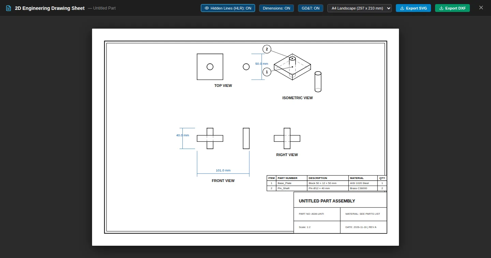
The balloons are placed outside the isometric view and kept clear of the other views, the dimensions and the tables. An assembly drawing has no GD&T symbols, because tolerances belong on the part drawings. Switch back to Part to draw the part again.
Saving, importing and exporting
- Save and reopen your projects
- Choose the right export format for 3D printing, machining or another CAD program
Send the bracket to a 3D printer and to a supplier
- Press Ctrl+S to download the project file. This keeps the full feature history. Reopen it with Ctrl+O.
- Click Export in the top bar.
- Pick STL (Binary) and click Export File to get a file for your slicer.
- Export again as STEP AP214 for a supplier who uses another CAD program.
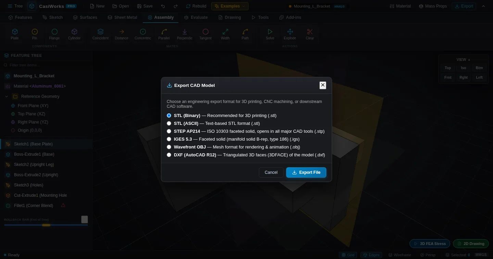
CasiWorks also keeps the open part in your browser, about a second after each change. If you reload the page or the tab closes, the part comes back the next time you open CasiWorks, and the status bar says Restored … from autosave. Autosave keeps only one part, the last one you worked on, and it does not keep undo history. It is not a backup: it lives in this browser only, and clearing site data removes it. Save a project file for anything you want to keep.
| Format | Best for | Notes |
|---|---|---|
| Project (Save) | Your own work | The only format that keeps the editable history. |
| STL binary / ASCII | 3D printing | Triangles only. Binary files are smaller. |
| STEP AP214 | Other CAD programs | A faceted solid (flat triangle faces), not exact curves. |
| IGES 5.3 | Older CAD and CAM programs | Faceted manifold solid. |
| OBJ | Rendering and animation | Mesh with normals. |
| DXF R12 | AutoCAD and laser cutting | The model as 3DFACE entities. For a 2D sheet, export from the drawing instead. |
STEP and IGES files from CasiWorks are made of flat triangles. A machinist cannot pick a true cylinder from them. For machined parts, send the 2D drawing as well.
Stress analysis (FEA)
Finite element analysis (FEA) predicts how much a part bends and how hard it is stressed under a load, before you make it.
- Set up a static study: mesh, fixed face, load face, direction and force
- Solve it and read von Mises stress, deflection and the safety factor
- Show the stress and the deformed shape on the model
- Probe values at points and save a study report
Is the L-bracket strong enough for 5 kN?
- Open the L-bracket. If the FEA panel is folded, click 3D FEA Stress at the bottom right to open it.
- Choose the Mesh Element. Use Tet10 (Quadratic) for results you will rely on. Tet4 is a quick preview that reads low on bending.
- Choose the Mesh Size: Coarse (~1,500), Medium (~5,000) or Fine (~15,000 elements).
- Set Fixed Face to Back (−Z), Load On to Front (+Z), Load Direction to −Y, and Applied Force to
5000N. The fixed face turns green on the model and red arrows show the load. - Click Solve. The solver runs in the background with a progress bar, and Cancel stops it.
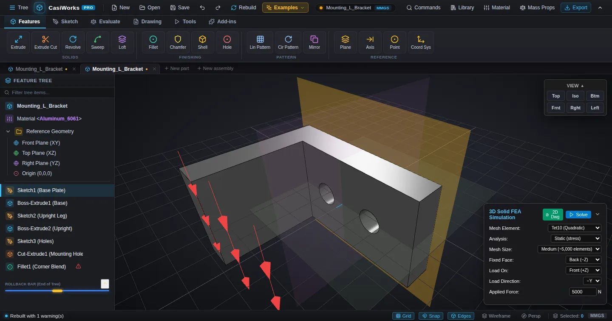
- Read the results: Mesh 5,040 elements covering 98% of the part's volume, Max von Mises 99.1 MPa, Max Deflection 93.7 µm, Safety Factor 2.79.
- With Show on model ticked, the part is coloured by stress, from blue (low) to red (high).
- Switch the plot to Displacement and tick Deformed. The bend is scaled up (here ×104) so you can see it.
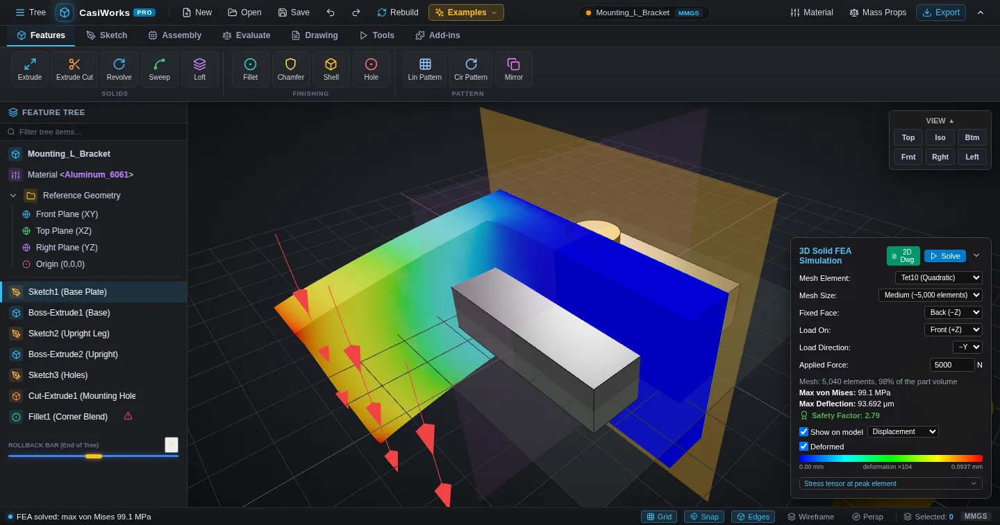
Probe the results and save a report
- With the plot shown, click anywhere on the coloured part. A numbered probe appears, with the von Mises stress and the displacement at the nearest mesh node, whichever quantity is plotted. The FEA panel lists the probes too.
- Probe the places you care about, such as the inside corner and the loaded edge. Clear probes removes them, and a new solve starts afresh.
- Click Report. CasiWorks saves a one-page HTML report: a pass/fail verdict on the safety factor (1.5 required), the key results, the picture of the plot as you see it, the study, material and mesh, and your probes. Open it in a browser to read, print or save it as PDF.
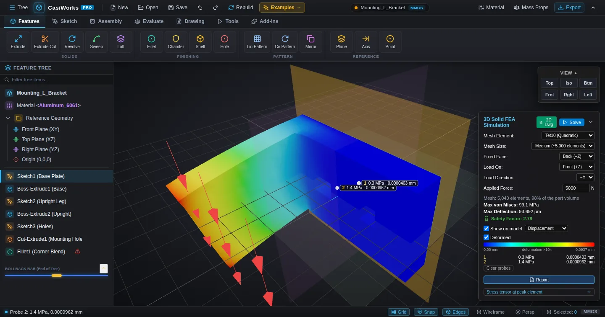
Natural frequencies: will it resonate?
A part bolted to a motor, fan or vehicle is shaken. If the shaking matches one of its natural frequencies, small vibrations grow large. A modal analysis finds those frequencies and the shape the part vibrates in at each.
- In the FEA panel set Analysis to Modal (frequencies). The load rows disappear: a modal study needs only the material and the Fixed Face.
- Pick Coarse mesh with Tet10 for a quick, accurate answer (on a 100 mm steel cantilever it is within 1% of the textbook beam formula), then click Solve.
- The panel lists the six lowest frequencies. Click a mode to see its shape on the model. The shape is drawn exaggerated; only its form matters, not its size.
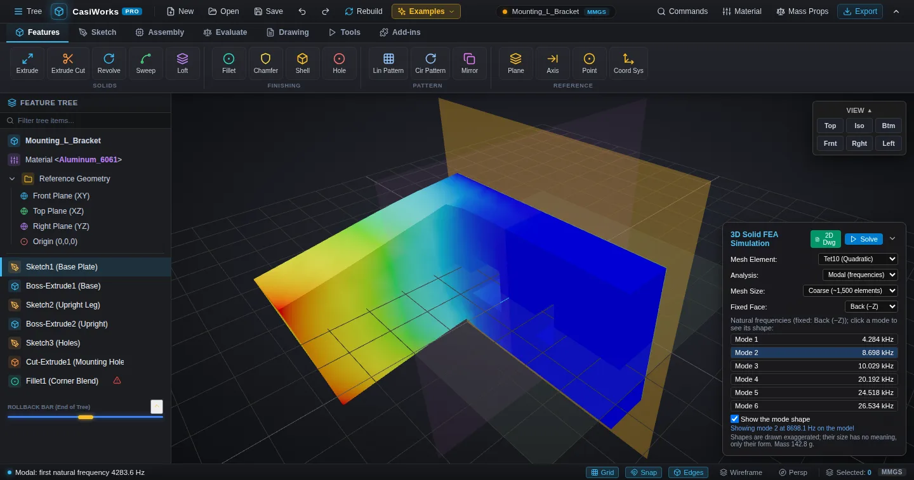
A common rule is to keep the first natural frequency at least √2 (about 1.4) times above the highest shaking frequency, ideally 2–3 times. To raise it, make the part stiffer (thicker, ribs, a shorter overhang) or lighter. From code: api.model.naturalFrequencies({ fixedFace: 'zMin', modes: 3 }).
Reading the numbers like an engineer
Yield strength ÷ peak stress: 276 ÷ 99.1 ≈ 2.79. Most machine parts aim for 1.5–3, so this bracket passes with margin.
Should be close to 100%. A low figure means the mesh missed thin walls, so try a finer mesh.
Solve on Medium, then on Fine. If the peak stress changes by less than about 5%, the answer is settled.
If you change the part, its material or the load after solving, the results grey out until you solve again.
Fixed and loaded faces are the six sides of the part's bounding box. You cannot pick a single hole face yet. The study is linear static: small deflections, no contact. Sharp inside corners give stress peaks that are higher than reality, and a real fillet would lower them.
Macros: record and replay
- Record model changes as a macro file
- Replay a macro into a new part
- Turn a macro into a JavaScript script
Record a "standard blank" macro
- Start a new part. On the Tools tab, click Record.
- Work as usual: sketch a rectangle on the Front plane and extrude it 12 mm. The record button counts the steps, for example Stop (2 steps).
- Click Stop. The macro is downloaded as a
.casimacro.jsonfile. - In a new part, click Run Macro and pick the file. The same features are rebuilt with exactly the same sizes.
- Save as Script turns the last macro into a JavaScript file that you can edit and run in the console or in Node.
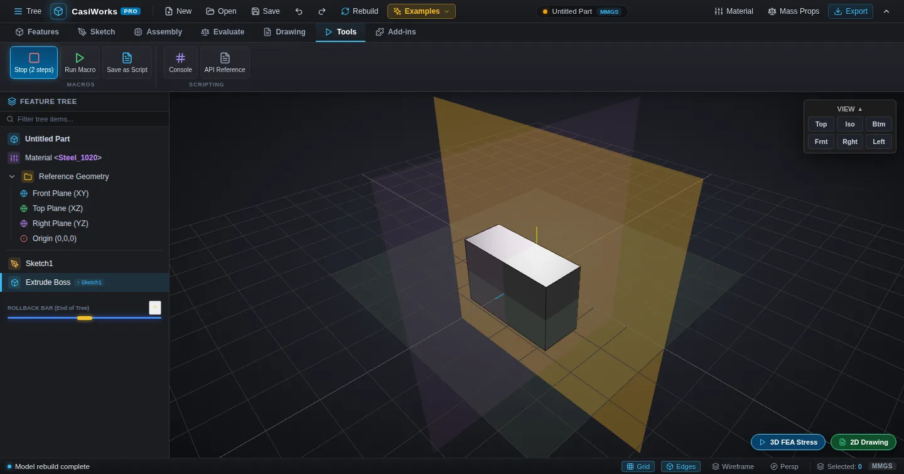
Only changes to the model are recorded. View changes, tool picks and cancelled panels are left out, so macros stay short and replay the same way every time.
The scripting console and the API
- Open the console and run the built-in examples
- Build and change parts with the
apiobject - Find any command or type in the API reference
A plate with a hole, written as code
- Press Ctrl+`, or click Console on the Tools tab. The console opens at the bottom, with examples and a searchable list of commands on the right.
- Click the Plate with a hole example and press Enter. The code builds the part and prints its mass properties.
- Press ↑ to bring back earlier input. Esc closes the console.

// 80 × 50 × 10 plate with a Ø16 through hole api.document.new(); const plate = api.sketches.create({ entities: [ { type: 'rectangle', corner1: { x: -40, y: -25 }, corner2: { x: 40, y: 25 } }, ] }); api.features.extrude({ sketchId: plate.sketchId, depth: 10, name: 'Plate' }); const hole = api.sketches.create({ entities: [{ type: 'circle', center: { x: 0, y: 0 }, radius: 8 }] }); api.features.extrude({ sketchId: hole.sketchId, depth: 10, endCondition: 'throughall', cut: true, name: 'Hole' }); api.model.massProperties() // → { volume, mass, centerOfMass, momentOfInertia, … }
Design study: thickness against mass
Scripts are at their best for jobs that are slow by hand. This one tries five plate thicknesses and lists the mass of each:
const f = api.features.list().find(f => f.name === 'Plate'); [6, 8, 10, 12, 15].map(t => { api.features.update(f.id, { depth: t }); return { thickness: t, grams: +(api.model.massProperties().mass * 1000).toFixed(1) }; })
api.on('rebuild', e => console.log(e.ok ? `rebuilt: ${e.bodyCount} body` : e.errors)); api.commands.execute('view.isometric'); run('model.setMaterial', { key: 'Aluminum_6061' });
The API at a glance
| Namespace | Examples |
|---|---|
api.document | new(), load(project) |
api.sketches | create({ plane, entities }) (plane: a standard plane, a reference plane id or { origin, xAxis, normal }, since 1.9), getEntities(id), constrain, setDimension (number or 'wall * 2', 1.12), status (since 1.11), and since 1.5 trim, extend, offset, mirror |
api.features | list(), extrude(), revolve(), hole({ standard: { size: 'M8' }, type: 'counterbore', … }) (since 1.8), referencePlane({ base, offset, angle }) (since 1.9), referenceAxis, referencePoint, revolve({ axis }) (since 1.10), coordinateSystem({ origin, rotation }) (since 1.15), update(id, changes), remove(id) |
api.model | massProperties({ coordinateSystem }), boundingBox(), measure(a, b) (since 1.6), naturalFrequencies(options) (since 1.14), rebuild(), errors() |
api.equations · api.configurations | set([{ name, expression }]), link(featureId, 'depth', 'wall * 8'), list() · set([{ name, values }]), activate('Large') (since 1.5) |
api.assembly | insert({ name, shape }), mate({ type, component1, component2 }), solve(), setMaterial(ids, key), bom() (since 1.5), interference() (since 1.13) |
api.drawings | setOptions({ subject: 'assembly' }), svg(), dxf(), pdf() (1.7): the drawing sheet, also headless (since 1.5) |
api.commands | list(), execute(id, args). Every ribbon button is a command. |
api.macros · api.plugins | start(), stop(), run(macro) · load(url), unload(id) |
api.on(event, fn) | rebuild, featureAdded, featureRemoved, commandExecuted, … |
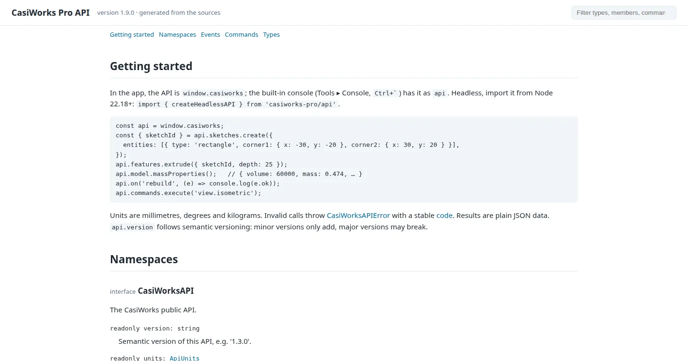
/api/.Bad calls throw a CasiWorksAPIError with a fixed code such as NOT_FOUND or INVALID_ARGUMENT. Check the code, not the message text, when your script needs to handle errors.
Add-ins: extend the ribbon
- Load, use and unload an add-in
- Write your own add-in with commands and ribbon buttons
The ISO 7089 washer generator
- Open the Add-ins tab and click Manage.
- Click Example: washer generator to fill in its address, then click Load. The message Loaded Washer generator 1.0.0 appears.
- Click Close. The Add-ins tab now has a Washer Generator group with M8 and M12 buttons.
- Click M8. A Ø16 × 1.6 mm washer with an 8.4 mm bore is added as a sketch and an extrude.
- To remove the add-in, open Manage again and click the bin icon next to it.


Write your own add-in
An add-in is a JavaScript module. Its default export gives an id, a name, a version, the API version it needs, its commands and, if you like, ribbon buttons. Commands get host.api, which is the same public API as the console.
export default { id: 'plate', name: 'Plate generator', version: '1.0.0', apiVersion: '1.4', commands: [{ name: 'create', label: 'Plate', description: 'args: { w, h, t } in mm', run({ w = 100, h = 60, t = 8 } = {}, host) { const s = host.api.sketches.create({ entities: [ { type: 'rectangle', corner1: { x: -w / 2, y: -h / 2 }, corner2: { x: w / 2, y: h / 2 } }, ] }); return host.api.features.extrude({ sketchId: s.sketchId, depth: t, name: `Plate ${w}×${h}×${t}` }); }, }], buttons: [{ command: 'create', label: '100×60', args: { w: 100, h: 60, t: 8 } }], };
Load it with Manage ▸ Load from file…, or from the console with await api.plugins.load('/plugins/my-plate.js'). Its commands are named after the add-in, so this one runs as run('plate.create', { w: 80 }). Compare your file with public/plugins/washer.js, which is the reference example.
An add-in runs with the same access as CasiWorks itself: your model, your files when you save, and the network. Only load add-ins from sources you trust.
size argument to the plate add-in with three presets (S, M, L), and give each preset its own ribbon button.Headless automation with Node
The same API runs without a browser. Use it to make part families in bulk, check designs in CI, or build parts from a spreadsheet.
Make a family of spacers from a script
import { createHeadlessAPI } from 'casiworks-pro/api'; const api = createHeadlessAPI(); for (const t of [5, 10, 15, 20]) { api.document.new(); const s = api.sketches.create({ entities: [ { type: 'circle', center: { x: 0, y: 0 }, radius: 15 }, { type: 'circle', center: { x: 0, y: 0 }, radius: 6.5 }, ] }); api.features.extrude({ sketchId: s.sketchId, depth: t, name: `Spacer ${t}` }); const { volume, mass } = api.model.massProperties(); console.log(`Spacer Ø30×${t}: ${volume.toFixed(0)} mm³, ${(mass * 1000).toFixed(1)} g`); }
node spacers.ts
A macro saved in Chapter 14 can be replayed headless with api.macros.run(json). Then check api.model.errors() is empty and the mass is within tolerance. That gives you an automatic regression test for a part.
name,width,height,thickness rows and print the mass of each plate in aluminium 6061.Your document library: versions, revisions, status and the REST API
Saving to a file keeps one copy. The library keeps every version you save, lets you release one as a revision (A, B, C…), and lets scripts and other programs reach your parts. It runs on your own computer: nothing leaves it.
Start the library and save two versions
- In a terminal in the project folder run
npm run buildonce, thennpm run server. Openhttp://127.0.0.1:5180: the same app, now with a library. (Documents are kept in~/.casiworks.) - Load the L-bracket example. Click Library in the top bar, type First cut for the motor mount as the message and click Save to library. The title bar now shows v1.
- Make the base 30 mm deep and press Ctrl+Shift+S: version 2.
- Open the Library again (Ctrl+Shift+O), pick Version 1 and click Release: it becomes Rev A. A released version never changes, so it is safe to send to a supplier.
- Pick version 1 and click Open version 1 to go back to it. It opens in a tab of its own; saving then makes version 3: older versions are kept as they were.
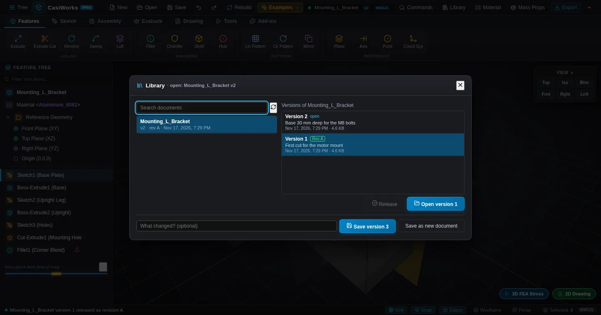
If the same document is saved from another window after you opened it, your save is refused rather than silently replacing that work. Your changes stay open: Save as new document keeps them, or open the newest version and redo them.
Review and release
Every library document has a status, shown next to its name in the Library and next to the version in the title bar:
| Status | Meaning | Saving |
|---|---|---|
| Draft | Being worked on. | Allowed |
| In review | Frozen while it is checked. | Locked (Return to draft to change it) |
| Released | The newest version is a released revision. | Allowed: the save starts the next revision and the status goes back to Draft |
| Obsolete | No longer used. | Locked, and so is releasing (Reactivate to use it again) |
- In the Library, pick the bracket. Under Status, type Check the bolt holes clear M8 as the note and click Send for review. The Save version button is now locked.
- Once checked, type Holes OK, approved and click Approve: release version 2. Version 2 becomes Rev B and the bracket is Released.
- Open History to see every change of status with its note and the version it applied to.
- Change the part and save: the bracket goes back to Draft, as the start of revision C. Revision B stays exactly as it was.
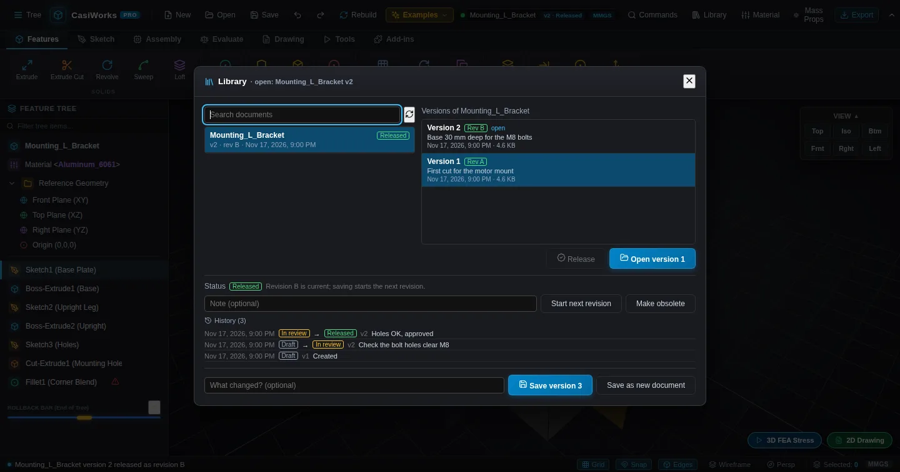
When review means something to you, use it. When it doesn't, Release version N works straight from Draft. Scripts can do the same with POST /api/v1/documents/{id}/lifecycle and {"state": "released", "note": "…"}, and a document.state_changed webhook fires on every change.
Save an assembly to the library and its library parts are recorded. Pick a part in the Library to see Used in: each assembly, how many times, and whether it follows the part's newest version or is pinned to one (a version chosen when inserting it from the library). A part that an assembly's newest version uses cannot be deleted. Scripts: GET /api/v1/documents/{id}/where-used.
Export a revision from a script
# once: a key for your scripts (shown only now) npm run server -- key create "export script" KEY=cw_… # the documents, then an STL export job for version 1 curl -s -H "Authorization: Bearer $KEY" http://127.0.0.1:5180/api/v1/documents curl -s -H "Authorization: Bearer $KEY" -H "content-type: application/json" \ -d '{"kind":"export","documentId":"<id>","version":1,"format":"stl"}' \ http://127.0.0.1:5180/api/v1/jobs curl -s -H "Authorization: Bearer $KEY" -o bracket.stl \ http://127.0.0.1:5180/api/v1/jobs/<job id>/result
Jobs rebuild the saved version on the same kernel the app uses, without a browser. A rebuild job reports rebuild warnings and the mass properties; an export job writes STL, OBJ, STEP, IGES or DXF. The whole API is described at /api/v1/openapi.json (OpenAPI 3.1).
POST /api/v1/webhooks with a url and the library will POST to it when a version is saved, a revision released, a status changed or a job finished, signed with X-CasiWorks-Signature: sha256=… (HMAC of the body with the secret you get back). Use it to start a slicer, copy released parts to a shared folder, or post to a chat.
The server listens on 127.0.0.1 only, refuses other web sites and other host names, and every API call needs your API key (the app uses its own session). Revoke a key with npm run server -- key delete <id>.
GET /api/v1/documents?state=draft), with its newest version and latest revision.Appendix A · Keyboard shortcuts
| Keys | Command | Keys | Command |
|---|---|---|---|
| Ctrl+Alt+N | New part | L | Line |
| Ctrl+O | Open | R | Corner rectangle |
| Ctrl+S | Save (download) | C | Centre circle |
| Ctrl+Z | Undo | A | Centre arc |
| Ctrl+Y · Ctrl+Shift+Z | Redo | D | Smart dimension |
| F5 | Rebuild | E | Extrude |
| Esc | Cancel the current tool | Ctrl+1…6 | Front, Back, Left, Right, Top, Bottom |
| Ctrl+` | Scripting console | Ctrl+7 · Space | Isometric |
| S | Spline (in a sketch) | T | Trim (in a sketch) |
| M | Measure | Ctrl+K · F1 | Command palette |
| Ctrl+Shift+S | Save to library | Ctrl+Shift+O | Library |
| Ctrl+Alt+A | New assembly | Ctrl+Alt+M | Mate (pick faces) |
Shortcuts are ignored while you are typing in a field. Every shortcut runs a named command, so api.commands.list() shows them all with their keys.
Working without a mouse
Everything except drawing sketch geometry by hand can be done from the keyboard (sketches can be written in the scripting console instead). A blue ring shows where the keyboard is.
| Where | Keys | What they do |
|---|---|---|
| Anywhere | Ctrl+K or F1 | Command palette: type part of a command's name, ↑ ↓ to choose, Enter to run. A command that needs input says what it takes. |
| Ribbon tabs | ← → · Home End | Move between the tabs (Features, Sketch, Assembly…); Tab then goes into the tab's buttons. |
| Feature tree | ↑ ↓ · Home End | Move through the features (one Tab stop: the selected feature). |
| Enter · Delete · S · R | Edit the feature · delete it · suppress or unsuppress it · roll back to it. | |
| 3D view (Tab to it) | ← → ↑ ↓ | Turn the model 15° at a time. |
| Shift+arrows · + − · Home | Pan · zoom · back to the isometric view. | |
| Dialogs | Tab · Esc | Focus moves into a dialog when it opens and stays there; Esc closes it and returns you where you were. |
Every button, field and list is named for screen readers, dialogs are announced as dialogs, and the property panel is named after what it edits (e.g. Edit Boss-Extrude1).
Appendix B · Current limits
These are the parts of the app that do not do what their buttons might suggest, so they do not catch you out on a real job:
| Area | What happens today | What to do instead |
|---|---|---|
| Fillet, Chamfer, Shell | Added to the tree with ⚠ and not applied. | Round corners with sketch arcs and Trim; hollow parts with an inward Offset and Extrude Cut. |
| Surfaces and sheet metal | Not available: there are no surface or sheet-metal tools. | Model thin parts as extrudes (see the U-Channel example). |
| Drawing sheet | Views, dimensions and GD&T are placed for you; no section views or your own dimensions. | Export DXF and add these in a 2D CAD program. |
| FEA faces | Only the six bounding-box sides of the part. | Orient the part so the support and load are on outer faces. |
| Mates on faces | Flat faces and cylinders (holes, shafts) are recognised; edges, cones and spheres are not. | Mate the flat or round face next to the edge, or use a bounding-box face from a script. |
| STEP and IGES export | Faceted (triangles), not exact curves. | Send a 2D drawing with machined parts. |
All of these come from the triangle-mesh kernel: it has triangles, not exact edges and faces. An exact geometry kernel is not planned, so treat these as lasting limits and use the workarounds.
Appendix C · Glossary
| Term | Meaning |
|---|---|
| Sketch | A 2D drawing on a plane that features are built from. |
| Profile | A closed loop in a sketch. Loops inside other loops become holes. |
| Configuration | A named version of a part that changes some variable values (Tools ▸ Configs). Default is the plain values. |
| Interference | Two assembly components occupying the same space. Shown in red by Assembly ▸ Interference. |
| Relation | A rule a sketch keeps, such as horizontal, equal or tangent. Shown as a green tag. |
| Driving dimension | A size typed into a sketch (length, diameter, radius or distance). Change it and the sketch follows. |
| Centreline | A construction line in a sketch, used as the axis of a revolve. |
| Reference axis · point | An axis parallel to model X, Y or Z through a point, and a named point (Features ▸ Axis, Point). |
| Reference plane | A plane you make: a standard plane moved and tilted (Features ▸ Plane). Sketches on it follow it. |
| Global variable | A named value, such as wall = 4, that feature sizes can use in expressions (Tools ▸ Equations). |
| Feature | One modelling step, such as an extrude, cut, revolve, hole or pattern. |
| Parametric | Features keep their settings, so changing one rebuilds everything after it. |
| Rollback | Temporarily turning off every feature after a point in the history. |
| Mate | A rule that places one assembly component relative to another. |
| HLR | Hidden line removal: drawing hidden edges dashed or not at all. |
| GD&T | Geometric dimensioning and tolerancing: symbols for allowed form and position errors. |
| Tet4 / Tet10 | Tetrahedral finite elements with 4 nodes (linear) or 10 nodes (quadratic). |
| von Mises stress | A single stress value that is compared with the material's yield strength. |
| Safety factor | Yield strength divided by the peak stress. Above 1 means the part does not yield. |
| MMGS | The unit system: millimetre, gram, second. |